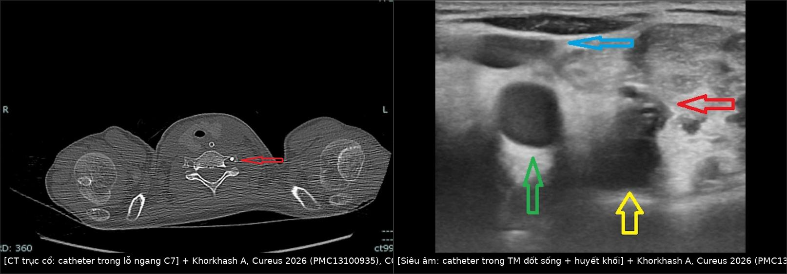
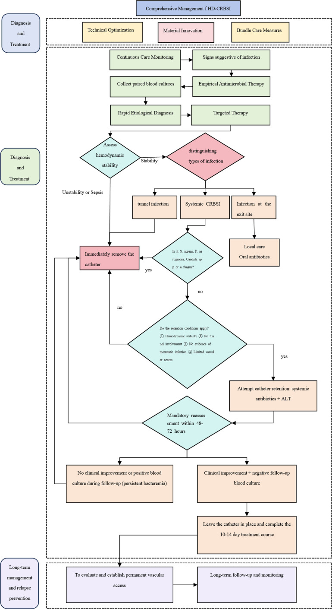
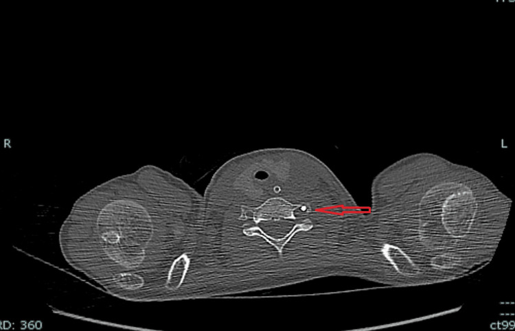
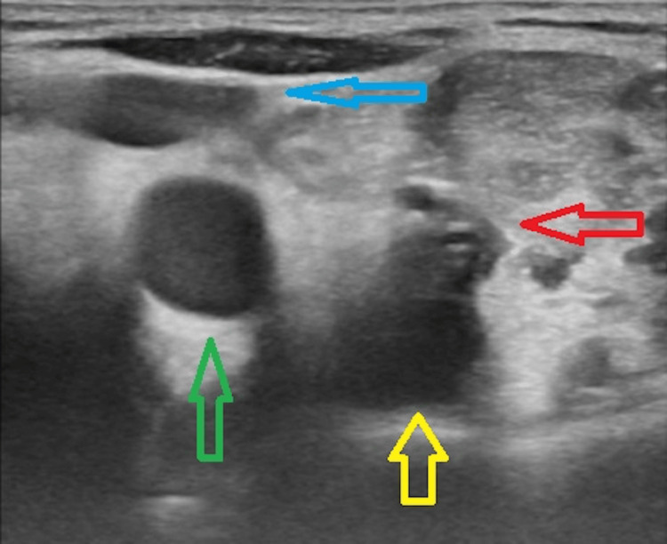
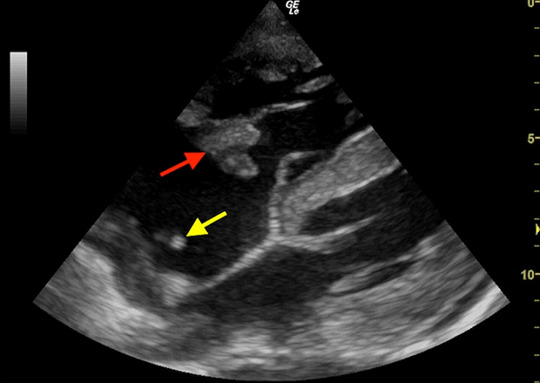

1771 — Nhiễm khuẩn huyết liên quan catheter trung tâm ở trẻ: cấy máu đôi, vị trí đầu catheter và khi nào rút / Central line-associated bloodstream infection (CLABSI) in children
Tags: pattern:nhiem-khuan vung:nhieu-co-quan protocol:CDC-NHSN protocol:DTTP protocol:sieu-am-long-mach protocol:CTA protocol:siec-tim score:CLABSI
Mức chắc chắn (certainty): tổng hợp y văn (literature synthesis) — số liệu nhi từ 31 trẻ hội chứng ruột ngắn (intestinal failure) dùng catheter – PN (PMC12937225), 270 catheter – 4.304 catheter-day ở PICU (PMC13306186), đoàn hệ trẻ lọc máu (PMC13181618); định nghĩa và tiêu chuẩn cấy máu từ tổng quan quản lý CRBSI 2026 (PMC13269079) + nghiên cứu độ tin cậy DTTP (PMC12131746); ngưỡng vị trí đầu catheter từ đoàn hệ 836 ca đặt port dưới huỳnh quang (PMC13702922). Ca minh họa là ca nguyên văn, ghi rõ nguồn từng ảnh.
Câu chốt: CLABSI là chẩn đoán vi sinh – dịch tễ, không phải chẩn đoán hình ảnh. Hình ảnh trả lời 4 câu hỏi: (1) đầu catheter có đúng chỗ không, (2) có huyết khối trong lòng mạch không, (3) có ổ nhiễm khuẩn thứ phát (viêm nội tâm mạc, tắc mạch nhiễm khuẩn, viêm xương) không, và (4) có ổ nhiễm khác giải thích được sốt không. Câu hỏi "có CLABSI không?" phải trả lời bằng cấy máu ngoại vi + cấy máu qua catheter, không bằng CT.
1. Tổng quan bệnh học – cơ chế hình ảnh
1.1 Hai định nghĩa không được lẫn
- CLABSI (central line-associated bloodstream infection – nhiễm khuẩn huyết liên quan catheter trung tâm): định nghĩa giám sát (surveillance) của CDC/NHSN — nhiễm khuẩn huyết nguyên phát ở người đang có catheter trung tâm ≥ 2 ngày lịch (ngày đặt tính là ngày 1), khởi phát từ ngày thứ 3 trở đi, và không do một ổ nhiễm khác (viêm phổi, nhiễm tiết niệu, nhiễm vết mổ). CLABSI không chứng minh catheter là nguồn.
- CRBSI (catheter-related bloodstream infection – nhiễm khuẩn huyết do catheter): định nghĩa lâm sàng – vi sinh — cùng một loại vi khuẩn mọc ở cấy máu ngoại vi và cấy máu lấy qua catheter, kèm bằng chứng catheter là nguồn: hiệu số thời gian mọc (differential time to positivity, DTTP) ≥ 120 phút (catheter mọc trước) hoặc tỷ lệ định lượng ≥ 5:1 (catheter/ngoại vi) (PMC12131746, PMC13269079).
- Hệ quả thực hành: CLABSI dùng để so sánh chất lượng giữa khoa; CRBSI dùng để quyết định rút hay giữ catheter. Một ca "CLABSI" có thể thực ra là nhiễm từ đường ruột ở trẻ suy ruột — và ngược lại, một CRBSI do S. aureus có thể không đủ tiêu chuẩn CLABSI nếu khởi phát sớm.
1.2 Sinh bệnh học: vì sao hình ảnh không thấy ổ nhiễm
- Màng sinh học (biofilm): vi khuẩn bám vào mặt trong catheter, tiết ma trận polysaccharide; màng dày 10–100 µm, dưới giới hạn phân giải của CT (≈ 0,5–1 mm) và siêu âm (≈ 0,3–0,5 mm). Vì vậy không có "dấu hiệu biofilm" trên bất kỳ phương thức hình ảnh nào — chỉ thấy hệ quả: huyết khối, dày thành tĩnh mạch, ổ mủ quanh catheter.
- Hai đường vào: ngoài lòng (extraluminal) — vi khuẩn từ da đi theo mặt ngoài catheter qua cuff vào máu, thường sớm trong 10–14 ngày đầu; trong lòng (intraluminal) — nhiễm từ hub/van khi thao tác, thường muộn hơn, chiếm ưu thế ở catheter nằm lâu. Đây là lý do kỹ thuật sát khuẩn hub quan trọng hơn kháng sinh dự phòng.
- TẠI SAO huyết khối thấy được còn nhiễm khuẩn không: huyết khối là khối fibrin – tiểu cầu – hồng cầu có trở kháng âm khác máu (echo lòng mạch) và không xẹp khi ép; còn vi khuẩn không tạo đậm độ tia X và không đủ lớn để tạo mặt phân cách âm. Nhiễm khuẩn chỉ trở nên "thấy được" khi đã tạo dịch mủ, khí, phù mô, hoặc huyết khối nhiễm khuẩn.
- TẠI SAO siêu âm tim thấy vegetation: vegetation là khối mô – fibrin – vi khuẩn ≥ 2 mm gắn vào van, dao động theo dòng máu; chênh trở kháng âm với máu đủ để tạo cấu trúc echo di động. Tuy vậy khối < 2 mm và van nhân tạo vẫn có thể bỏ sót — âm tính không loại trừ.
1.3 Ngưỡng định lượng
| Chỉ số | Số liệu | Nguồn |
|---|---|---|
| CRBSI ở trẻ hội chứng ruột ngắn dùng PN | 1,3–10,2 đợt/1.000 catheter-day; cao hơn ở trẻ < 1 tuổi | PMC12937225 |
| CLABSI ở PICU | 3,0/1.000 catheter-day (13 ca/4.304 ngày) | PMC13306186 |
| Nguy cơ theo thời gian nằm | 15–22 ngày: aOR 4,33; ≥ 23 ngày: aOR 11,71 so với < 14 ngày | PMC13306186 |
| Vị trí đặt | tĩnh mạch đùi tăng nguy cơ (aOR 2,45 ở trẻ lọc máu); IJ phải thấp hơn đùi (aOR 0,34) | PMC13181618, PMC13306186 |
| Đường kính catheter | ≥ 7 Fr: aOR 2,20 | PMC13181618 |
| Cân nặng/tuổi | Trẻ < 1 tuổi nguy cơ cao nhất; suy giảm miễn dịch aOR 2,18 | PMC12937225, PMC13181618 |
| Vi khuẩn | Gram dương ≈ 64%, CoNS ≈ 32%, Gram âm ≈ 36% (người lớn lọc máu); trẻ suy ruột: S. epidermidis, E. faecalis, K. pneumoniae | PMC13269079, PMC12937225 |
| Vị trí đầu catheter | Dải tối ưu 20–40 mm dưới carina; CAJ trung bình 46,2 mm dưới carina | PMC13702922 |
| Siêu âm chẩn đoán huyết khối catheter | Độ nhạy 91%, độ đặc hiệu 93% | PMC13435576 |
- Vì sao thời gian nằm lâu lại tăng nguy cơ: màng sinh học dày dần, fibrin sheath hình thành quanh đầu catheter sau 24–48 giờ, tạo giá thể cho vi khuẩn; đồng thời số lần thao tác hub tăng theo thời gian. Nguy cơ không tuyến tính — tăng vọt sau tuần thứ 2–3, đúng như aOR 11,71 ở nhóm ≥ 23 ngày.
- Vì sao đùi nguy cơ cao: vùng bẹn ẩm, nhiều vi khuẩn da – niêm mạc, catheter di động khi gấp háng, và dễ nhiễm bẩn phân – nước tiểu ở trẻ nhỏ; thêm vào đó huyết khối tĩnh mạch đùi gặp nhiều hơn do dòng chảy thấp.
2. Mẫu hình + chẩn đoán phân biệt theo vị trí (gamut)
- Đầu catheter quá cao (SVC trên, thân cánh tay đầu): tăng huyết khối, chệch dòng, khó lấy máu; không bảo vệ được tĩnh mạch chủ.
- Đầu catheter quá thấp (nhĩ phải/thất phải): loạn nhịp, thủng, chèn ép tim, huyết khối quanh van ba lá.
- Catheter lạc (malposition) — gamut theo đường đi: tĩnh mạch đốt sống (ảnh ca 1), tĩnh mạch azygos, tĩnh mạch vú trong, tĩnh mạch màng tim – hoành, khoang màng phổi, động mạch. Mỗi vị trí có hệ quả riêng: azygos → huyết khối + tràn dịch; màng tim → chèn ép; động mạch → thiếu máu/giả phình.
- Huyết khối liên quan catheter (catheter-related thrombosis, CRT): hay gặp nhất ở đầu catheter (fibrin sheath) và thân catheter trong tĩnh mạch lớn; có thể bít tắc hoặc không bít tắc. Gamut: huyết khối do catheter, huyết khối do ung thư/tăng đông, huyết khối do nhiễm khuẩn (septic thrombophlebitis).
- Viêm tắc tĩnh mạch nhiễm khuẩn (septic thrombophlebitis): huyết khối nhiễm khuẩn ở tĩnh mạch có catheter — sốt dai dẳng, cấy máu dương tính kéo dài dù kháng sinh, đau dọc tĩnh mạch; nguy cơ tắc mạch nhiễm khuẩn và viêm mủ màng phổi.
- Viêm nội tâm mạc tim phải (right-sided infective endocarditis): van ba lá; hay gặp S. aureus, Candida, catheter nằm lâu; siêu âm tim là chốt.
- Tắc mạch phổi nhiễm khuẩn (septic pulmonary emboli): nốt ngoại vi, hang hóa, "feeding vessel" trên CT; thường từ S. aureus hoặc Candida.
- Ổ nhiễm khác phải loại trừ: CAUTI (bài 3086), viêm phổi thở máy, nhiễm vết mổ, viêm ruột – translocation ở trẻ suy ruột, viêm xương – đĩa đệm (bài 3121).
3. Bảng so sánh phân biệt (ma trận đối chiếu)
| Thực thể (entity) | Hình ảnh điển hình | Chốt vào (rule-in) | Chốt loại (rule-out) | Gợi ý xác nhận |
|---|---|---|---|---|
| CLABSI/CRBSI | Không có dấu hiệu hình ảnh đặc hiệu; CT/US chỉ để tìm biến chứng | Cấy máu ngoại vi + qua catheter cùng loại VK, DTTP ≥ 120 phút hoặc tỷ lệ ≥ 5:1; khởi phát ≥ ngày 3 với catheter | Cấy máu chỉ qua catheter dương tính, ngoại vi âm → không đủ chẩn đoán CRBSI | Cấy máu đôi, định lượng/DTTP, loại trừ ổ khác |
| Huyết khối liên quan catheter (CRT) | Siêu âm: echo trong lòng mạch, không xẹp khi ép, ± Dopppler mất dòng; CT: khuyết thuốc trong lòng tĩnh mạch | Tĩnh mạch không xẹp + khối echo trong lòng; đau/phù chi, catheter không rút được | Siêu âm bình thường không loại trừ huyết khối sau xương đòn/trung thất | Siêu âm Doppler (nhạy 91%, đặc hiệu 93%), CT tĩnh mạch nếu cần |
| Viêm tắc tĩnh mạch nhiễm khuẩn | Huyết khối dày thành, thâm nhiễm mô quanh, ± khí trong lòng mạch; CT có cản quang | Sốt dai dẳng + cấy máu dương kéo dài > 72 giờ dù kháng sinh đúng; huyết khối có mủ | Huyết khối đơn thuần không sốt, cấy máu âm → không phải thể nhiễm khuẩn | Siêu âm + CT, cấy máu lặp, rút catheter |
| Viêm nội tâm mạc tim phải | Siêu âm tim: vegetation di động trên van ba lá, ± catheter tip trong nhĩ phải; TEE nhạy hơn TTE | Vegetation trên van ba lá + cấy máu dương; S. aureus/Candida là cờ đỏ | TTE âm không loại trừ — cần TEE nếu lâm sàng mạnh | TTE → TEE; cấy máu; theo dõi emboli |
| Tắc mạch phổi nhiễm khuẩn | CT ngực: nốt ngoại vi đa ổ, hang hóa, feeding vessel, ± tràn dịch | Nốt/hang ngoại vi + cấy máu dương ở bệnh nhân có catheter | X-quang bình thường không loại trừ (nhỏ, ngoại vi) | CT ngực có cản quang |
| Ổ nhiễm khác (CAUTI, VAP, vết mổ) | Ổ nhiễm tương ứng trên hình ảnh | Cấy ổ đó dương + hình ảnh ổ nhiễm; cấy máu cùng loại VK | Không có ổ trên hình + cấy ổ âm → quay lại catheter | Cấy ổ nghi ngờ, CT/US vùng tương ứng |

Trái: CT trục cổ — catheter (mũi tên đỏ) đi qua lỗ ngang C7, tức vào tĩnh mạch đốt sống, không vào tĩnh mạch cảnh trong. Phải: siêu âm — catheter là cấu trúc echo tròn trong lòng tĩnh mạch đốt sống, kèm huyết khối quanh catheter. Nguồn: Khorkhash A, Cureus 2026 (PMC13100935), CC BY 4.0. Ảnh ghép letterbox.Dấu hiệu "đầu catheter đúng chỗ" — đọc thế nào
- Trên X-quang ngực thẳng: đầu catheter (radiopaque) nên nằm ở ngã ba tĩnh mạch chủ trên – nhĩ phải (cavoatrial junction, CAJ). CAJ nằm trung bình 46,2 mm dưới carina; dải chấp nhận tốt nhất trong đoàn hệ 836 ca là 20–40 mm dưới carina (PMC13702922).
- Cạm bẫy: carina không phải mốc cố định — carina có thể cao/thấp theo tư thế và thể tích phổi; đầu catheter quá thấp trên phim portable (BN nằm) có thể thực ra nằm trong nhĩ phải khi BN ngồi. Luôn đối chiếu đường đi (qua TM cảnh trong hai bên, không qua trung thất) và độ sâu dự kiến.
- Catheter lạc vào tĩnh mạch đốt sống: trên phim ngực có thể giống hệt catheter cảnh trong; siêu âm thấy catheter sau tĩnh mạch cảnh trong, trong lỗ ngang đốt sống; CT xác nhận (ảnh trên). Đây là lý do không được chỉ dựa vào X-quang khi đường đi bất thường.
4. Protocol chụp + hệ phân độ/điểm chuẩn hóa
4.1 Cấy máu — "protocol" quan trọng hơn mọi hình ảnh
- Trước kháng sinh (nếu chưa sốc): lấy 2–3 bộ cấy máu, mỗi bộ 20–30 mL ở người lớn; trẻ 1–3 mL/bottle tùy cân nặng (tối thiểu 1 mL mỗi bottle để tăng độ nhạy).
- Một bộ từ ngoại vi + một bộ qua mỗi lumen catheter (catheter nhiều nòng: lấy từng nòng vì có thể chỉ một nòng nhiễm).
- Ghi thời điểm cấy chính xác từng bộ; phòng xét nghiệm ghi thời gian mọc.
- DTTP ≥ 120 phút (catheter mọc trước) hoặc tỷ lệ định lượng ≥ 5:1 = CRBSI (PMC12131746).
- Không lấy máu qua catheter vừa mới đặt hoặc vừa flush; không bơm dung dịch vào catheter trước khi cấy (có thể làm loãng/âm giả).
Phản biện: DTTP không hoàn hảo — trong một đoàn hệ ICU, độ nhạy chỉ 50,0%, độ đặc hiệu 71,8%, PPV 54,2%, NPV 68,3% (PMC12131746). Ngưỡng 120 phút kém chính xác với Candida và S. aureus do đặc tính sinh học màng sinh học; vì vậy âm tính không loại trừ, và quyết định vẫn dựa vào bệnh cảnh + cấy lặp + hình ảnh biến chứng.
4.2 Hình ảnh — chọn đúng câu hỏi
| Tình huống | Phương thức | Mục tiêu |
|---|---|---|
| Ngay sau đặt catheter | X-quang ngực (hoặc fluoroscopy) | Đầu catheter ở CAJ, đường đi không lạc; loại trừ tràn khí màng phổi |
| Sốt + catheter nằm lâu | Siêu âm Doppler tĩnh mạch (cảnh trong, dưới đòn, đùi) | Huyết khối trong lòng, dày thành, ổ mủ quanh catheter |
| Nghi viêm nội tâm mạc | TTE trước, TEE nếu TTE âm nhưng lâm sàng mạnh | Vegetation van ba lá, catheter tip trong nhĩ phải |
| Sốt dai dẳng + ho/khó thở | CT ngực có cản quang | Tắc mạch nhiễm khuẩn, hang hóa, tràn dịch |
| Đau lưng/sốt | MRI cột sống | Viêm đĩa đệm – xương (bài 3121) |
| Cấy máu dương kéo dài, không ổ rõ | CT ngực – bụng – chậu | Ổ nhiễm thứ phát (gan, lách, khớp, mô mềm) |
- Siêu âm là tuyến đầu khi nghi CRT: độ nhạy 91%, độ đặc hiệu 93% (PMC13435576). Kỹ thuật: ngang + dọc, ép bằng đầu dò (không xẹp = huyết khối), Doppler màu (mất dòng), đánh giá tĩnh mạch cảnh trong, dưới đòn, nách, đùi.
- Hạn chế: xương đòn và trung thất che khuất; huyết khối sau xương đòn hoặc trong SVC có thể bỏ sót → CT tĩnh mạch có cản quang nếu lâm sàng mạnh.
4.3 Phân loại và quyết định giữ/rút catheter
- CRBSI đơn giản (uncomplicated): sốt giảm và cấy máu âm trong 48–72 giờ sau kháng sinh đúng, huyết động ổn, không có ổ thứ phát (viêm nội tâm mạc, huyết khối nhiễm khuẩn, nhiễm tunnel).
- CRBSI phức tạp (complicated): sốt/bacteremia > 72 giờ, sốc nhiễm khuẩn, có ổ thứ phát hoặc nhiễm tunnel.
- Rút catheter ngay khi: S. aureus, P. aeruginosa, Candida, nhiễm tunnel, sốc nhiễm khuẩn, bacteremia dai dẳng > 72 giờ, hoặc không có đường vào thay thế nhưng BN không ổn định (PMC13269079).
- Có thể giữ catheter + khóa kháng sinh (antibiotic lock therapy, ALT) khi: huyết động ổn định, VK độc lực thấp (CoNS), không nhiễm tunnel/ổ thứ phát, cải thiện trong 48–72 giờ, cấy máu ngoại vi âm sau 2–4 ngày. Thời gian điều trị 10–14 ngày (PMC13269079).
- ALT: kháng sinh nồng độ cao + heparin (theo phác đồ) trong lòng catheter 12–24 giờ/ngày; không dùng nếu VK kháng thuốc hoặc catheter không cần giữ.
- Phòng ngừa: taurolidine khóa catheter giảm CRBSI ở trẻ suy ruột (tỷ lệ 29,4 vs 42,8/1.000 catheter-day, aRR 0,78) (PMC12734565); LOCK-IT-100 ở người lớn lọc máu: HR 0,28 (PMC13269079). Ethanol lock không khuyến cáo ở sơ sinh non tháng vì nguy cơ ngấm ethanol toàn thân và kết tủa protein trong lòng catheter.

Lưu đồ gốc: cấy máu đôi → phân loại đơn giản/phức tạp → rút ngay với S. aureus/P. aeruginosa/Candida hoặc nhiễm tunnel/sốc, còn lại thử giữ catheter + ALT và đánh giá lại 48–72 giờ. Nguồn: Ge Y et al., Front Cell Infect Microbiol 2026 (PMC13269079), CC BY 4.0.flowchart TD
A[Trẻ có catheter trung tâm, sốt ≥ 38°C] --> B[Cấy máu ngoại vi + qua từng lumen TRƯỚC kháng sinh]
B --> C{Khởi phát ≥ ngày 3 + không ổ khác?}
C -->|Không| D[Tìm ổ khác: phổi, tiết niệu, vết mổ, ruột]
C -->|Có| E[CLABSI theo dõi; chờ DTTP + định lượng]
E --> F{DTTP ≥ 120 phút hoặc tỷ lệ ≥ 5:1?}
F -->|Không| G[Không đủ CRBSI: cấy lặp, tìm ổ khác, không rút catheter vội]
F -->|Có| H{VK: S. aureus, P. aeruginosa, Candida?}
H -->|Có| I[RÚT catheter + kháng sinh 10–14 ngày ± TEE]
H -->|Không| J{Huyết động ổn + không nhiễm tunnel/ổ thứ phát?}
J -->|Không| I
J -->|Có| K[Giữ catheter + ALT + kháng sinh]
K --> L{48–72 giờ: sốt giảm + cấy máu ngoại vi âm?}
L -->|Không| I
L -->|Có| M[Tiếp tục 10–14 ngày, theo dõi tái phát]
I --> N[Siêu âm tim + CT ngực nếu nghi ổ thứ phát]
5. Biến thể bình thường và cạm bẫy
- "Một bộ cấy qua catheter dương tính" không phải CLABSI: CoNS là tạp nhiễm da phổ biến; cần 2 bộ và cấy ngoại vi để phân biệt. Đừng rút catheter chỉ vì một bottle dương.
- DTTP âm không loại trừ CRBSI: đặc biệt với Candida, S. aureus, catheter nằm lâu; nếu lâm sàng mạnh, cấy lặp + hình ảnh.
- Đầu catheter "đúng" trên phim portable: phim chụp BN nằm có thể làm đầu catheter trông thấp hơn thực tế; đối chiếu đường đi và độ sâu; nếu nghi lạc, siêu âm/CT.
- Siêu âm bình thường không loại trừ huyết khối SVC: vùng sau xương đòn/trung thất bị che; nếu catheter không rút được, phù mặt/cổ, đau ngực → CT tĩnh mạch.
- Satisfaction of search: thấy huyết khối quanh catheter rồi dừng lại, bỏ sót vegetation van ba lá hoặc tắc mạch phổi nhiễm khuẩn — luôn hỏi "ổ thứ phát ở đâu?".
- Không chọc/ flush catheter nghi nhiễm trước khi cấy: thao tác có thể đẩy vi khuẩn vào máu và làm âm giả cấy máu.
- Trẻ sơ sinh: catheter rốn và PICC có nguy cơ riêng; không dùng ethanol lock; hạn chế số lần thao tác hub là biện pháp hiệu quả nhất.
- Đừng nhầm "catheter còn dùng được" với "catheter an toàn": catheter bít tắc một phần có thể vẫn lấy máu được nhưng là ổ nhiễm dai dẳng.
6. Tự lượng giá — Blind Quiz
Ca 1 — Bé gái 4 tuổi, suy ruột, catheter trung tâm đặt qua tĩnh mạch cảnh trong trái; sau đặt 2 giờ, đầu catheter không lấy được máu, X-quang ngực "ổn". CT cổ dưới dưới đây cho thấy gì?

- Câu hỏi: Catheter đi vào tĩnh mạch nào? Vì sao X-quang ngực có thể "bình thường"? Hệ quả lâm sàng nếu bỏ sót?
Bấm để hiện đáp án
- Catheter (mũi tên đỏ) đi qua lỗ ngang đốt sống C7 → vào tĩnh mạch đốt sống, không vào tĩnh mạch cảnh trong.
- Trên X-quang ngực, catheter vẫn đi lên trên vào trung thất giống catheter cảnh trong → dễ đọc nhầm là bình thường; siêu âm/CT mới thấy đường đi sau cảnh trong.
- Hệ quả: không lấy được máu, huyết khối, đau cổ, nguy cơ truyền nhầm thuốc vào đám rối đốt sống; phải rút và đặt lại dưới hướng dẫn siêu âm.
- Nguồn: Khorkhash A, Zahran A, Cureus 2026 (PMC13100935), CC BY 4.0.
Ca 2 — Bé trai 7 tuổi, catheter đùi 3 tuần, sốt 39°C, đau và sưng đùi phải. Siêu âm dọc tĩnh mạch đùi:

- Câu hỏi: Cấu trúc echo tròn trong lòng mạch là gì? Huyết khối nằm ở đâu? Có nên rút catheter ngay không?
Bấm để hiện đáp án
- Cấu trúc echo tròn, bóng lưng sau = catheter; nó nằm trong tĩnh mạch đốt sống (trường hợp này), và huyết khối echo bao quanh.
- Huyết khối quanh catheter trong lòng mạch → CRT, có thể nhiễm khuẩn nếu sốt + cấy máu dương.
- Có chỉ định rút nếu: huyết khối nhiễm khuẩn, sốt dai dẳng, cấy máu dương kéo dài; nếu không, kháng sinh + theo dõi siêu âm và không luồn dây mới qua cùng đường.
- Nguồn: Khorkhash A, Zahran A, Cureus 2026 (PMC13100935), CC BY 4.0.
Ca 3 — Bé gái 2 tuổi, catheter trung tâm 6 tuần, sốt dai dẳng dù meropenem 5 ngày, cấy máu S. aureus. POCUS tim:

- Câu hỏi: Mũi tên đỏ và vàng chỉ gì? Vì sao S. aureus là cờ đỏ? Bước tiếp theo?
Bấm để hiện đáp án
- Mũi tên đỏ: vegetation trên van ba lá; mũi tên vàng: đầu catheter trong nhĩ phải.
- S. aureus có nguy cơ cao di căn (viêm nội tâm mạc, viêm xương, áp-xe) → rút catheter, TEE, kháng sinh tĩnh mạch kéo dài, tìm ổ thứ phát.
- POCUS phát hiện được vegetation lớn nhưng không thay TEE; nếu POCUS âm mà lâm sàng mạnh → TEE.
- Nguồn: MacCready ENA, Keteku IN, Pan Afr Med J 2026 (PMC13279896), CC BY 4.0.
Bài liên quan chéo
- 3086 – CAUTI ở trẻ: chẩn đoán và khi nào rút sonde
- 1739 – Cai sonde tiểu & TWOC ở trẻ
- 3121 – Nhiễm khuẩn mảnh ghép cột sống ở trẻ
- 1430 – Độc thần kinh cấp (ICANS) sau CAR-T
- 1980 – Dự phòng nhiễm trùng cơ hội sau ghép tạng
- 497 – Theo dõi sau cấy ốc tai điện tử ở trẻ
Ảnh
- Nguồn + giấy phép từng ảnh:
images/CREDITS.md. Ba ảnh gốc (CT, siêu âm, POCUS) + một ảnh ghép letterbox; tất cả CC BY 4.0, giữ nguyên nội dung, không crop. - Ảnh minh họa quy trình (PMC13269079, Fig. 2) dùng ở mục 4; xem
images/CREDITS.md.
Không dùng để chẩn đoán độc lập khi chưa có người hướng dẫn.